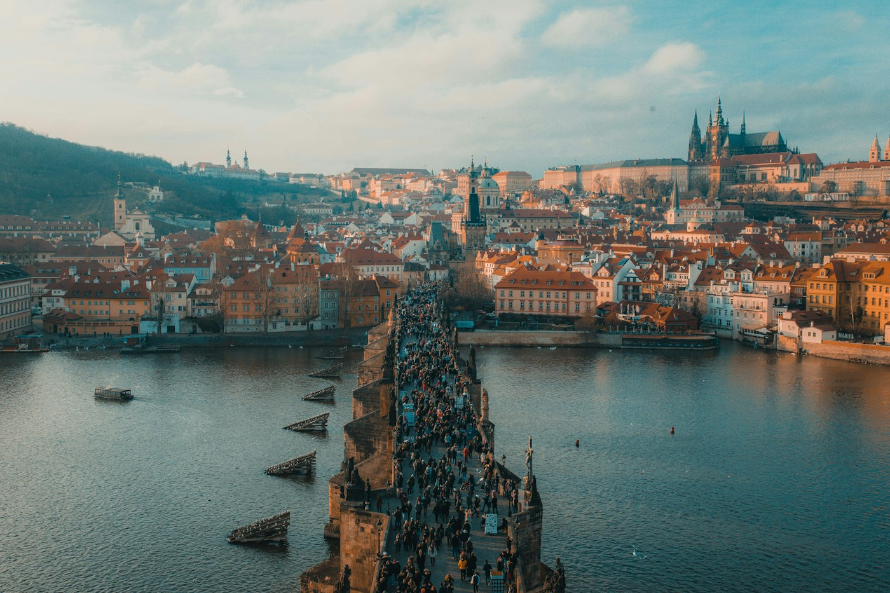

{{article.title}}
{{article.description}}
Continue explorandoMENOS PRESSA. MAIS DESCOBERTAS.
Um novo olhar para a Europa, uma rua de cada vez.
Encontre seu próximo destino
UM CONTINENTE.
INFINITAS HISTÓRIAS.
EM DESTAQUE · ROTEIROS
Ruas de pedra, torres que recortam o céu e pequenas pausas pelo caminho. Um roteiro de dois dias para conhecer a cidade no seu ritmo.
Leia o roteiro completo
PRAGA, REPÚBLICA TCHECASEU PRÓXIMO CAPÍTULO
{{article.description}}
Continue explorandoO JEITO CITYGUIDE DE VIAJAR
Um blog de estudo sobre cidades, cultura e gastronomia. Roteiros ilustrativos para despertar a curiosidade, sem a pressa de conhecer tudo.
Escolha uma história